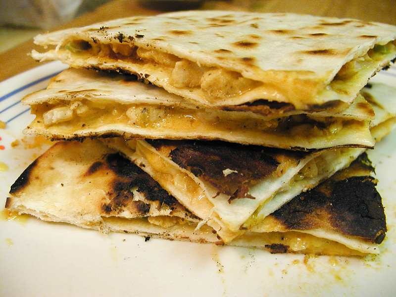

Quesadilla Recipe

Typical Mexican Quesadilla
Queso = cheese ,tor-tilla= tortilla
A traditional quesadilla is made up of a
good flour tortilla and a good smooth
clear cheese.
Ingredients
- flour tortillas
- cheese 100 gr
Instructions
- bring a pan to medium heat
- place 1 torilla on the pan til starts to
inflate
- while the tortilla is getting warm ,
grate your cheese (the whole of it)
- place your grated cheese on the
warm tortilla and cover with the other tortilla
- flip the tortilla a couple of times
until the cheese starts to melt
- eat